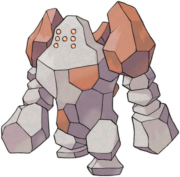
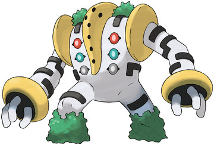
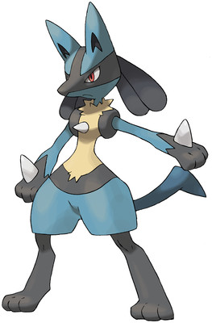
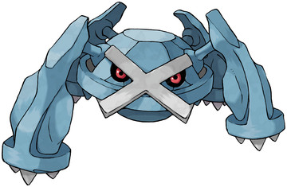
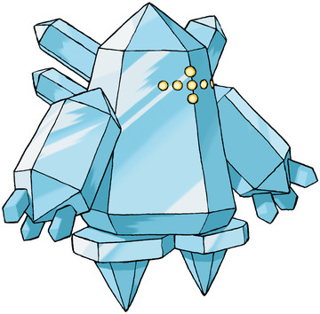
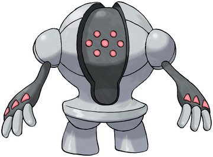

레지락 카운터 총정리｜레지아이스·레지스틸까지
이번 포켓몬 GO 5성 레이드에는 레지락(레지록)·레지아이스·레지스틸이 한꺼번에 돌아와요. 8월 26일과 9월 2일, 레이드 아워만 두 번 열리는 구성도 낯설 수 있어요. 바위·얼음·강철로 타입이 전부 달라서 카운터도 각각 따로 준비해야 하는데, 셋 다에게 통하는 타입은 딱 하나, 격투예요. 8월 26일부터 9월 8일까지 이어지는 이번 레이드, 타입별 약점과 추천 카운터부터 잡은 뒤 개인 대전에서 쓰는 법까지 이 글 하나로 짚어볼게요.
마지막 업데이트 2026.08.05 · 8/26 등장 전 기준, 세부는 공식 공지 시 보완

레지 3형제 중 하나, 바위 타입 레지락
이미지: 포켓몬 공식
일정
레지 3형제 등장 기간 — 이번엔 레이드 아워가 두 번이에요
레지락·레지아이스·레지스틸은 2026년 8월 26일 오전 6시부터 9월 8일 오후 10시까지, 현지시간 기준으로 5성 레이드에 함께 등장해요. 세 마리가 같은 창 안에 도는 방식이라, 그날그날 체육관마다 어떤 보스가 걸릴지는 로테이션에 달렸어요.
그 안에서도 8월 26일(수)과 9월 2일(수) 저녁 6시부터 7시까지는 레이드 아워로 잡혀 있어요. 이 시리즈 레이드 카운터 글을 쓰면서 레이드 아워가 한 번이 아니라 두 번인 경우는 이번이 처음이에요. 두 번 다 놓쳐도 8월 26일부터 9월 8일까지는 평소처럼 레이드가 열리니 조급해하지 않아도 돼요.
레이드 아워가 두 번이라는 건 그만큼 사람 모으기 좋은 기회도 두 번이라는 뜻이에요. 8월 26일에 못 갔다면 9월 2일에 다시 노려볼 수 있으니, 두 날짜 다 미리 표시해 두면 마음이 편해요.
정체
레지락·레지아이스·레지스틸, 원래 이런 사이였어요
이 셋은 호연 지방 유적에 봉인돼 있던 전설의 포켓몬이자, 레지기가스가 자기 모습을 본떠 만든 것으로 알려진 포켓몬이에요. 고대인과 함께 지내며 도움을 줬지만, 그 힘을 두려워한 고대인 손에 봉인됐다는 설정이 원작부터 이어져 와요.
종족값도 재미있어요. 셋 다 총합은 580으로 똑같은데, 배분 방식만 달라요. 레지락은 공격 100·방어 200으로 물리 방어에 쏠려 있고, 레지아이스는 특수공격 100·특수방어 200으로 정반대 방향에 쏠려 있어요. 레지스틸만 공격·특공 각 75, 방어·특방 각 150으로 고르게 나뉜 균형형이에요. HP 80과 스피드 50은 셋 다 똑같아요.

레지 3형제를 만든 것으로 알려진, 레지기가스
이미지: 포켓몬 공식
레지기가스는 아직 별개 이야기지만, 레지 3형제를 먼저 잡아 두면 나중에 관련 이벤트가 열릴 때 도움이 될 수도 있어요. 이번 기회에 세 마리 다 잡아 두는 걸 목표로 삼아 볼 만해요.
약점 정리
약점부터 한 번에 — 격투는 셋 다 통해요
레지락은 물·풀·격투·땅·강철에, 레지아이스는 불·격투·바위·강철에, 레지스틸은 불·격투·땅에 약해요. 셋 다 단일 타입이라 두 배로 뛰는 이중약점은 없고, 전부 1.6배씩 동률이에요.
| 보스 | 타입 | 약점(각 1.6배) |
|---|---|---|
| 레지락 | 바위 | 물·풀·격투·땅·강철 |
| 레지아이스 | 얼음 | 불·격투·바위·강철 |
| 레지스틸 | 강철 | 불·격투·땅 |
표를 보면 겹치는 타입이 하나 보여요. 바로 격투예요. 물·불·풀·땅·바위·강철은 보스마다 갈리지만, 격투만큼은 셋 모두에게 먹혀요. 딜러를 보스마다 따로 준비하기 어렵다면, 격투 딜러 한 마리부터 키워 두는 편이 효율적이에요.

격투 딜러 한 마리면 셋 다 커버돼요, 루카리오
이미지: 포켓몬 공식
레지락 카운터
레지락(바위) 카운터 — 물·격투·땅 딜러가 강해요
레지락 상대로는 메타그로스·루카리오·가이오가·노보청·그란돈처럼 강철·격투·물·땅 타입 딜러가 특히 잘 먹혀요.
| 포켓몬 | 타입 | 추천 기술(빠른+차지) |
|---|---|---|
| 메타그로스 | 강철 | 불릿펀치 + 코멧펀치 |
| 루카리오 | 격투 | 카운터 + 파동탄 |
| 가이오가 | 물 | 폭포오르기 + 하이드로펌프 |
| 노보청 | 격투 | 카운터 + 폭발펀치 |
| 그란돈 | 땅 | 머드샷 + 지진 |

레지락 최상위 카운터 중 하나, 메타그로스
이미지: 포켓몬 공식
이 중 하나만 있어도 충분해요. 메타그로스나 루카리오처럼 평소에 잘 쓰는 딜러가 있다면 그대로 데려가면 되고, 물 타입인 가이오가나 땅 타입인 그란돈도 화력이 크게 밀리지 않아요.
다섯 마리 다 갖출 필요는 없어요. 평소에 쓰던 강철이나 격투 딜러가 있다면 그대로 데려가도 충분히 통해요.
레지아이스 카운터
레지아이스(얼음) 카운터 — 불꽃이 최우선이에요
레지아이스 상대로는 샹델라·번치코 같은 불꽃 딜러와 메타그로스·램펄드·루카리오처럼 강철·바위·격투 타입 딜러가 잘 먹혀요.
| 포켓몬 | 타입 | 추천 기술(빠른+차지) |
|---|---|---|
| 샹델라 | 불 | 회오리불꽃 + 오버히트 |
| 메타그로스 | 강철 | 불릿펀치 + 코멧펀치 |
| 램펄드 | 바위 | 떨어뜨리기 + 스톤샤워 |
| 루카리오 | 격투 | 카운터 + 파동탄 |
| 번치코 | 불 | 지지기 + 오버히트 |

5성 레이드로 함께 돌아오는 레지아이스
이미지: 포켓몬 공식
얼음 타입이라 불꽃이 특히 잘 먹히는데, 종이신도 때처럼 이중약점까지는 아니라서 1.6배 수준이에요. 그래도 강철·바위·격투 딜러를 섞어 쓰면 저항하는 타입이 거의 없어서 딜이 안정적으로 들어가요.
저는 마침 메타그로스를 키워 둬서 레지락이랑 레지아이스 둘 다 이 한 마리로 밀어붙이려고요. 하나를 여러 보스에 돌려 쓸 수 있다는 게 레지 3형제의 은근한 장점이에요.
레지스틸 카운터
레지스틸(강철) 카운터 — 마찬가지로 불꽃·격투가 답이에요
레지스틸 상대로는 샹델라·파이어·번치코·부스터 같은 불꽃 딜러와 루카리오 같은 격투 딜러가 최상위 카운터로 꼽혀요.
| 포켓몬 | 타입 | 추천 기술(빠른+차지) |
|---|---|---|
| 샹델라 | 불 | 회오리불꽃 + 오버히트 |
| 루카리오 | 격투 | 카운터 + 파동탄 |
| 파이어 | 불 | 회오리불꽃 + 오버히트 |
| 번치코 | 불 | 지지기 + 오버히트 |
| 부스터 | 불 | 회오리불꽃 + 오버히트 |

강철 단일 타입, 레지스틸
이미지: 포켓몬 공식
레지스틸은 저항하는 타입이 열 가지 넘게 많은 편이라, 약점인 불·격투·땅 셋 중에서 골라 가는 게 훨씬 안전해요. 불꽃 딜러가 유독 많이 꼽히는 이유는, 레지아이스에서 썼던 불꽃 조합을 그대로 재사용할 수 있기 때문이에요.
불꽃 딜러 한 팀을 레지아이스·레지스틸 두 보스에 그대로 돌려써도 괜찮아요. 굳이 보스마다 새로 파티를 짤 필요는 없어요.
배틀리그
레이드로 끝이 아니에요 — 배틀리그에서도 쓰여요
레지락·레지아이스·레지스틸은 록온을 빠른 기술로 쓰면서 슈퍼리그·하이퍼리그에서도 나름의 자리를 차지하는 포켓몬이에요.
레지락은 방어 능력치가 워낙 높아서 록온으로 빠르게 채운 에너지로 스톤에지를 쏘는 방식이 주력이에요. 레지아이스도 같은 스탯 배분이라 기본 체력은 비슷하고, 눈보라를 메인으로 쓰면서 기합구슬·지진·번개 중 하나를 골라 함께 쓰는 조합이 알려져 있어요. 레지스틸은 전자포와 기합구슬 조합으로, 한때는 배틀리그 초중반기를 주도한 사기 포켓몬으로 불릴 만큼 강했고 지금도 하이퍼리그에서 쓰임새가 남아 있어요.
레이드로 잡은 개체를 그대로 GO 배틀리그에 쓰려면 록온을 배운 개체인지 먼저 확인해 두면 좋아요. 셋 다 같은 빠른 기술을 쓰는 만큼, 어느 쪽을 먼저 키울지는 취향껏 골라도 괜찮아요.
참여 팁
인원과 색이, 이것까지 알아두면 좋아요
레지 3형제는 각각 최소 3명이면 잡히고, 넉넉하게는 4명 이상이면 여유로워요. 셋 다 방어 능력치가 높은 편이라, 인원이 딱 3명이면 카운터 화력이 아쉬울 때 시간에 쫓길 수 있어요. 확실하게 잡고 싶다면 4명 이상을 모아서 도는 편이 마음 편해요.
색이(이로치)도 셋 다 가능성이 열려 있어요. 안내 문구는 "운이 좋으면 만날 수 있다" 수준으로만 돼 있어서, 확률을 몇 퍼센트라고 딱 잘라 말하기는 아직 일러요. 8월 26일부터 9월 8일까지 기간이 넉넉한 편이니, 세 보스를 골고루 도는 김에 색이도 같이 노려볼 만해요.
| 보스 | 권장 인원 | 색이(이로치) |
|---|---|---|
| 레지락 | 최소 3명·여유 4명 이상 | 가능(확률 비공개) |
| 레지아이스 | 최소 3명·여유 4명 이상 | 가능(확률 비공개) |
| 레지스틸 | 최소 3명·여유 4명 이상 | 가능(확률 비공개) |
카운터 다양성을 더 넓히고 싶다면 메가뮤츠X 카운터 글도 참고할 만하고, 레지 3형제를 잡은 뒤 개체값이 궁금해지면 개체값 평가 글에 확인 방법을 정리해 뒀어요.
자주 묻는 질문
레지 3형제 카운터, 이건 궁금해요
Q레지락·레지아이스·레지스틸 중에 뭐가 제일 잡기 쉬운가요?
셋 다 방어 능력치가 높은 준전설급이라 화력 좋은 카운터 없이는 시간이 빠듯해요. 격투 딜러 한 마리만 준비해도 세 보스 모두에게 최소한의 효율은 나오니, 그 한 마리부터 마련해 두는 편이 안전해요.
Q레이드 아워가 두 번이라던데, 아무 날에나 가도 되나요?
8월 26일과 9월 2일, 두 날짜 모두 저녁 6시부터 7시까지 한 시간씩 레이드 아워예요. 이 시간을 놓쳐도 8월 26일부터 9월 8일까지는 평소처럼 레이드가 열리니 기간 안이면 언제든 도전할 수 있어요.
Q레지 3형제도 색이가 나오나요?
네, 셋 다 운이 좋으면 색이를 만날 수 있다고 공식 안내에 나와 있어요. 다만 정확한 확률은 공개되지 않았고, 어느 쪽이 더 잘 나온다는 정보도 따로 없어요.
Q레이드로 잡은 레지 3형제, 다른 데도 쓸 수 있나요?
네, 록온을 빠른 기술로 쓰면서 슈퍼리그·하이퍼리그에서도 쓰여요. 레지스틸은 한때 배틀리그를 주도했을 정도로 강했던 전적이 있어요.
정리하면, 레지락·레지아이스·레지스틸은 이번에 함께 돌아오지만 타입은 전부 다른 세 보스예요. 격투 딜러 하나만 준비해 둬도 셋 다 최소한은 커버되고, 여유가 있다면 보스별로 불꽃·물·강철 딜러를 더해 화력을 높이면 돼요. 레이드 아워가 두 번이니 8월 26일과 9월 2일 저녁 중 편한 날을 골라 다녀오면 좋겠어요.
#레지락카운터 #레지아이스카운터 #레지스틸카운터 #포켓몬GO #포켓몬고레이드 #레지트리오 #8월포켓몬고